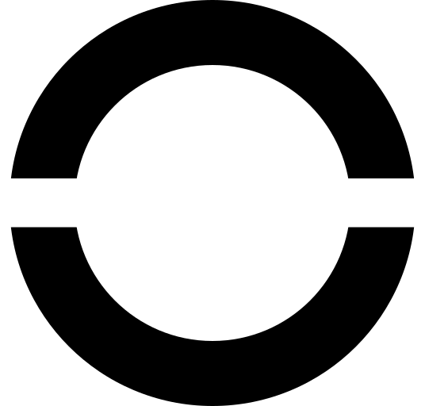

“The real thinker must be able to think two contradictory thoughts at the same time.” - Friedrich Nietzsche
NODE is a network that makes art work.We believe technology drives art forward; and art gives technology meaning.
We reject the midcurve: the safe, obvious, or boring.
We work alongside artists to create unforgettable experiences.
